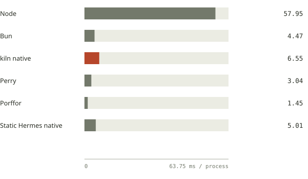
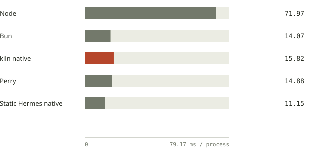
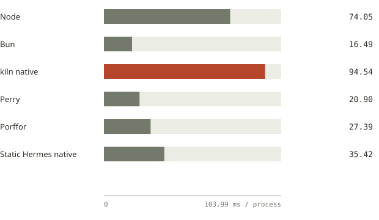
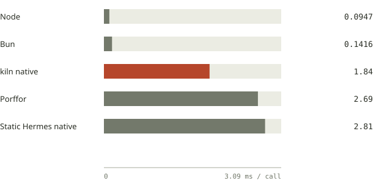
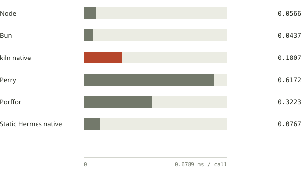

Native runtime benchmarks and compatibility.
Matched kiln, Perry, Porffor and Static Hermes native results, with Node and Bun references. Every answer checked before timing.
Shared tests. Correct answers before speed.
All six runtimes receive the same 24 selected probes and five workloads. Node is the oracle. Every compile failure, process failure, timeout or wrong answer remains visible. Every accepted timing sample has its output or every timed return checked against Node.
Same fixtures, frozen toolchains · 2026-10-12 · AMD Ryzen 7 5800H with Radeon Graphics · Linux x86_64 · 7 interleaved runs · timing pinned to logical CPU 15. All outcomes, samples and methodology →
Compatibility by tested surface
| Runtime | Language / 14 | Host / 6 | Bundled npm / 4 | All selected / 24 |
|---|---|---|---|---|
| Node | 14 | 6 | 4 | 24 |
| Bun | 14 | 6 | 4 | 24 |
| kiln native | 14 | 6 | 4 | 24 |
| Perry | 14 | 6 | 2 | 22 |
| Porffor | 10 | 0 | 2 | 12 |
| Static Hermes native | 13 | 1 | 3 | 17 |
Counts are passing probes, not supported language features or complete package suites. The bundled npm probes exercise semver, lodash.get, Zod and Effect using exact versions from the lockfile. Package bundling is identical across runtimes; package resolution is not tested by those four rows.
Tested toolchains and profiles
| Runtime | Version / revision | Tested profile |
|---|---|---|
| Node | v26.8.1 | Direct source execution |
| Bun | 1.4.2 | Direct source execution |
| kiln native | v0.1.0 | native-release |
| Perry | v0.5.1520 | default native, prebuilt full stdlib; no V8 fallback flag |
| Porffor | alpha-17 | native -O3 |
| Static Hermes native | 820aa0d4b5fe5d3ed7900e1274211ef561081b3f | shermes -O; native executable dynamically links Hermes runtime on Linux; esbuild strips TS annotations |
Static Hermes executes native code generated by shermes; its Linux binary links shared Hermes libraries. Perry uses the release’s prebuilt full standard library without the V8 fallback flag. Therefore executable file sizes alone are not a fair deployment-size ranking. TypeScript annotations are stripped with esbuild for Static Hermes; other portable programs use their original TypeScript source. The fixtures are in an npm project, so kiln automatically provisions its Node layer. Standalone-directory startup and optional Static Hermes typed-mode optimization are different profiles from this run.
Fastest valid medians in this run
| Workload | Lowest valid median | Lowest native median |
|---|---|---|
| Print-and-exit startup | Porffor | Porffor |
| 5,000-row table transform | Static Hermes native | Static Hermes native |
| 2,000-row HTML render | Bun | Perry |
| Warmed numeric kernel | Node | kiln native |
| Warmed JSON pipeline | Bun | Static Hermes native |
These leaders are workload-specific. Wrong outputs are excluded, and startup is distinct from warmed work.
How to use these results
For a short-lived CLI, compare whole-process timing. For repeated work inside a running service, compare the warmed rows. For an existing application, first identify required language and host behavior in the compatibility matrix. A faster executable with a wrong answer is excluded.
These are seven samples on one machine, not a statistical significance claim. Warmed results use a real millisecond clock and batches of at least 100 ms. Workloads are single-core and do not benchmark parallel collection methods, actor throughput, GUI rendering or HTTP serving. The 22-workload repository snapshot covers additional JavaScript operations. The separate HTTP benchmark covers Node, Bun and Deno.
Print-and-exit startup
ms / process; lower is better. Includes process spawn, startup and work; excludes compilation.

| Runtime | Median | Min–max / same unit | Outcome |
|---|---|---|---|
| Node | 57.95 ms | 57.44–59.38 | pass |
| Bun | 4.47 ms | 4.25–10.84 | pass |
| kiln native | 6.55 ms | 6.31–6.74 | pass |
| Perry | 3.04 ms | 2.84–4.53 | pass |
| Porffor | 1.45 ms | 1.38–1.73 | pass |
| Static Hermes native | 5.01 ms | 4.41–5.29 | pass |
Download the TypeScript workload
5,000-row table transform
ms / process; lower is better. Includes process spawn, startup and work; excludes compilation.

| Runtime | Median | Min–max / same unit | Outcome |
|---|---|---|---|
| Node | 71.97 ms | 68.52–73.48 | pass |
| Bun | 14.07 ms | 13.54–32.29 | pass |
| kiln native | 15.82 ms | 15.57–16.46 | pass |
| Perry | 14.88 ms | 14.74–15.46 | pass |
| Porffor | wrong-output | — | wrong-output |
| Static Hermes native | 11.15 ms | 10.66–11.76 | pass |
Download the TypeScript workload
2,000-row HTML render
ms / process; lower is better. Includes process spawn, startup and work; excludes compilation.

| Runtime | Median | Min–max / same unit | Outcome |
|---|---|---|---|
| Node | 74.05 ms | 71.52–75.80 | pass |
| Bun | 16.49 ms | 15.48–16.80 | pass |
| kiln native | 94.54 ms | 93.32–95.65 | pass |
| Perry | 20.90 ms | 20.08–21.63 | pass |
| Porffor | 27.39 ms | 27.24–28.16 | pass |
| Static Hermes native | 35.42 ms | 35.12–35.94 | pass |
Download the TypeScript workload
Warmed numeric kernel
ms / call; lower is better. Excludes setup, startup and warmup; 200 warmup calls and calibrated batches of at least 100 ms.

| Runtime | Median | Min–max / same unit | Outcome |
|---|---|---|---|
| Node | 0.0947 ms/call | 0.0938–0.0947 | pass |
| Bun | 0.1416 ms/call | 0.1416–0.1436 | pass |
| kiln native | 1.84 ms/call | 1.83–1.88 | pass |
| Perry | wrong-output | — | wrong-output |
| Porffor | 2.69 ms/call | 2.69–2.72 | pass |
| Static Hermes native | 2.81 ms/call | 2.80–3.59 | pass |
Download the TypeScript workload
Warmed JSON pipeline
ms / call; lower is better. Excludes setup, startup and warmup; 200 warmup calls and calibrated batches of at least 100 ms.

| Runtime | Median | Min–max / same unit | Outcome |
|---|---|---|---|
| Node | 0.0566 ms/call | 0.0566–0.0571 | pass |
| Bun | 0.0437 ms/call | 0.0435–0.0444 | pass |
| kiln native | 0.1807 ms/call | 0.1787–0.1836 | pass |
| Perry | 0.6172 ms/call | 0.6016–2.17 | pass |
| Porffor | 0.3223 ms/call | 0.3203–0.3242 | pass |
| Static Hermes native | 0.0767 ms/call | 0.0762–0.0776 | pass |
Download the TypeScript workload
Every selected compatibility probe
Scroll sideways to inspect all six runtime columns.
| Probe | Group | Node | Bun | kiln native | Perry | Porffor | Static Hermes native |
|---|---|---|---|---|---|---|---|
| closure | language | pass | pass | pass | pass | pass | pass |
| private-fields | language | pass | pass | pass | pass | pass | pass |
| prototype-accessor | language | pass | pass | pass | pass | pass | pass |
| proxy-trap | language | pass | pass | pass | pass | pass | pass |
| dynamic-eval | language | pass | pass | pass | pass | pass | runtime-error |
| new-function | language | pass | pass | pass | pass | pass | pass |
| map-set | language | pass | pass | pass | pass | wrong-output | pass |
| sparse-array | language | pass | pass | pass | pass | pass | pass |
| regexp-unicode | language | pass | pass | pass | pass | pass | pass |
| json-reviver | language | pass | pass | pass | pass | wrong-output | pass |
| typed-array | language | pass | pass | pass | pass | pass | pass |
| bigint | language | pass | pass | pass | pass | wrong-output | pass |
| promise-order | language | pass | pass | pass | pass | pass | pass |
| error-cause | language | pass | pass | pass | pass | runtime-error | pass |
| structured-clone | host | pass | pass | pass | pass | runtime-error | runtime-error |
| utf8 | host | pass | pass | pass | pass | runtime-error | pass |
| url-search | host | pass | pass | pass | pass | runtime-error | runtime-error |
| node-path | host | pass | pass | pass | pass | compile-error | compile-error |
| node-buffer | host | pass | pass | pass | pass | compile-error | compile-error |
| node-fs | host | pass | pass | pass | pass | compile-error | compile-error |
| npm-semver | npm | pass | pass | pass | runtime-error | wrong-output | pass |
| npm-lodash-get | npm | pass | pass | pass | pass | pass | pass |
| npm-zod | npm | pass | pass | pass | pass | pass | pass |
| npm-effect | npm | pass | pass | pass | runtime-error | runtime-error | runtime-error |
Reproduce and inspect
The public evidence contains raw samples, stdout and diagnostics, command lines, binary hashes, source hashes, selected/deferred coverage, package versions and host load. Builds finish before timing, and runtime order is shuffled reproducibly across repetitions.
npm ci --prefix benchmarks --ignore-scripts
# Set KILN_BIN, PERRY_BIN, PORF_BIN, SHERMES_BIN and ESBUILD_BIN.
python3 scripts/compare-runtimes.py \
--out data/runtime-comparison-2026-10-12.json \
--work .scratch/comparison-run --passes 7 --cpu 15Download complete result JSONDownload runnerProfiles and reproduction instructionsEvery selected probeAll runtime comparisons